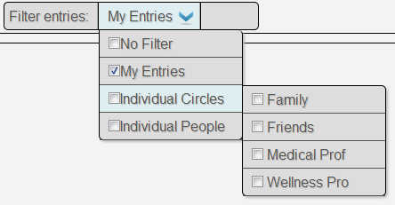

Welcome to the spaces page. Here is an overview of what you can do here.
- Right now you are in the 'all' space. This is similar to your Twitter or Facebook stream and shows all the latest entries of your helath record.
-
On the top left of the space you will find the filter box: 
This box allows you to display entries of your friends and of entire circles. Try it out!
- Next to each record entry you will find two buttons for space and circle assignments. Click on them, if you like to change the assignment.
- If you click on the entry itself, you will get to the detail view and see all the tiny little secrets about it.
- On top of the space you will find the tab view for the different spaces. Spaces are like folders and help you to organize your entries. Switch to another space by clicking on the corresponding tab. Rearange the tab view and add new spaces by clicking on the little gear image on the right.
- On spaces you have created on your own, you can also add visualizations. Many apps have corresponding visualizations which illustrate their data. You should check it out.